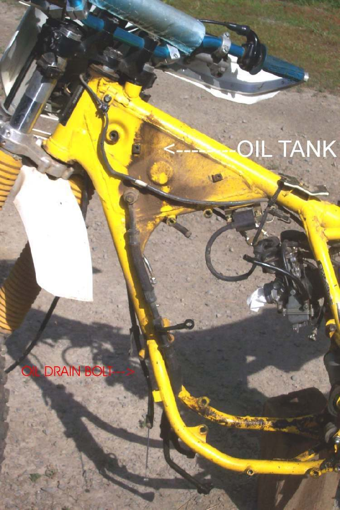
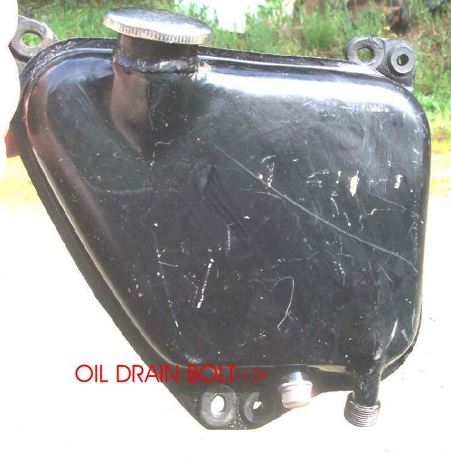
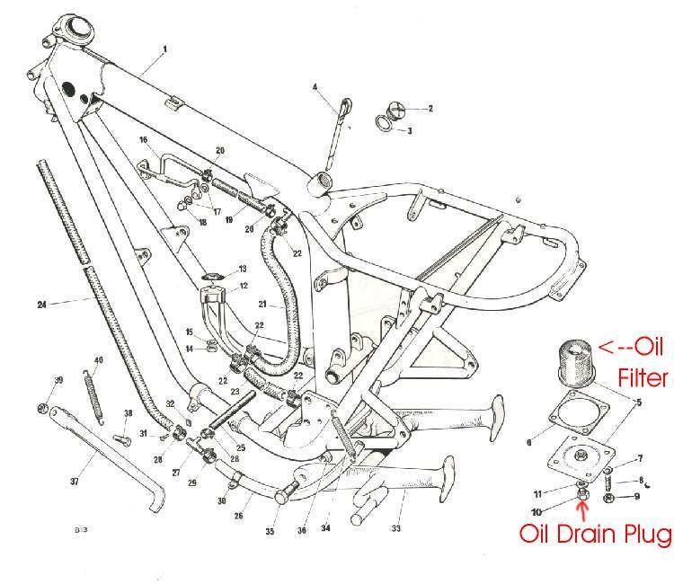
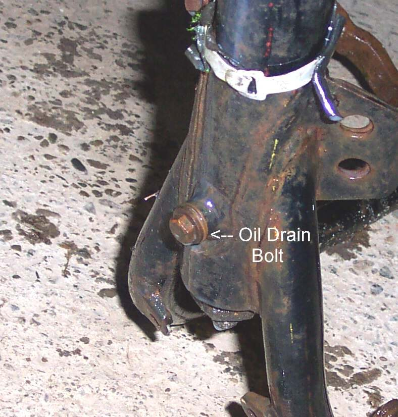

On a wet-sump engine the oil sits in the engine and the drain plug is on the engine. On a dry-sump engine the oil lives in a tank, so the tank has the drain plug. The tank is either part of the frame or a small separate tank fixed to the frame.
Safety
- Hot oil burns. Warm the oil so it drains well, then let it cool a little.
- Keep the bike upright and steady.
You need
- A drain pan that holds all the oil. The manual gives the amount.
- A new washer for the drain plug, and the filter if the manual lists one.
Steps
- Find the tank. Many Japanese bikes use the top backbone and the front downtube of the frame as the tank. The drain bolt is low on the front downtube. Some British bikes use the top tube that bends down into the rear tube, drained at the bottom of the rear tube. Others have a small separate tank bolted to the frame.
- Put the pan under the drain bolt and remove it. Let the oil run out fully.
- Check the manual for other drain points on the engine and for a filter. Change the filter as in Change a spin-on or paper oil filter.
- Fit the drain bolt with a new washer and tighten to the manual torque.
- Fill the tank to the correct amount.
- Run the engine and set the level as in Check the oil level on a dry-sump engine.
Check your work
- No oil weeps from the tank, hoses or drain bolt.
- The level, read after the engine has run, is between the marks.
If it did not fix the problem
- Oil leaks under the bike: Oil leaking under the bike.